산업안전산업기사 (2016-08-21 기출문제)
1과목: 산업안전관리론
1. 주요 구조 부분을 변경하는 경우 안전인증을 받아야 하는 기계·기구가 아닌 것은?(관련 규정 개정전 문제로 여기서는 기존 정답인 1번을 누르면 정답 처리됩니다. 자세한 내용은 해설을 참고하세요.)
- 원심기
- 사출성형기
- 압력용기
- 고소작업대
(정답률: 89%)

2. 관리감독자를 대상으로 작업지도방법, 작업개선방법, 대인관계능력 등을 가르치는 교육은?
- TWI(Training Within Industry)
- ATT(American Telephone & Telegram co.)
- MTP(Management Training Program)
- CCS(Civil Communication Section)
(정답률: 86%)
3. 국제노동기구(ILO)에서 구분한 “일시 전노동 불능”에 관한 설명으로 옳은 것은?
- 부상의 결과로 근로기능을 완전히 잃은 부상
- 부상의 결과로 신체의 일부가 근로기능을 완전히 상실한 부상
- 의사의 소견에 따라 일정 기간 동안 노동에 종사할 수 없는 상해
- 의사의 소견에 따라 일시적으로 근로시간 중 치료를 받는 정도의 상해
(정답률: 85%)
4. 교육훈련 평가의 4단계를 올바르게 나열한 것은?
- 학습→반응→행동→결과
- 학습→행동→반응→결과
- 행동→반응→학습→결과
- 반응→학습→행동→결과
(정답률: 57%)
5. 매슬로우(Maslow)의 욕구 5단계 이론에 해당되지 않는 것은?
- 생리적 욕구
- 안전의 욕구
- 사회적 욕구
- 심리적 욕구
(정답률: 90%)
6. 안전교육의 3요소(3단계)가 아닌 것은?
- 지식교육
- 기능교육
- 태도교육
- 실습교육
(정답률: 81%)
7. “그림에서 선 ab와 선 cd는 그 길이가 동일한 것이지만, 시각적으로는 선 ab가 선 cd보다 길어 보인다.“에서 설명하는 착시 현상과 관계가 깊은 것은?
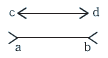
- 헬몰쯔의 착시
- 쾰러의 착시
- 뮬러-라이어의 착시
- 포겐 도르프의 착시
(정답률: 78%)
8. 인간의 안전교육 형태에서 행위의 난이도가 점차적으로 높아지는 순서를 올바르게 표현한 것은?
- 지식→태도변형→개인행위→집단행위
- 태도변형→지식→집단행위→개인행위
- 개인행위→태도변형→집단행위→지식
- 개인행위→집단행위→지식→태도변형
(정답률: 79%)
9. 산업안전보건법상 사업 내 안전·보건교육 교육과정이 아닌 것은?
- 특별교육
- 양성교육
- 작업내용 변경 시의 교육
- 건설업 기초 안전·보건교육
(정답률: 77%)
10. 학습의 전개 단계에서 주제를 논리적으로 체계화하는 방법이 아닌 것은?
- 간단한 것에서 복잡한 것으로
- 부분적인 것에서 전체적인 것으로
- 미리 알려져 있는 것에서 미지의 것으로
- 많이 사용하는 것에서 적게 사용하는 것으로
(정답률: 71%)
11. 산업재해 손실액 산정 시 직접비가 2000만원일 때 하인리히 방식을 적용하면 총 손실액은?
- 2000만원
- 8000만원
- 1억원
- 1억2000만원
(정답률: 76%)
12. 무재해 운동의 3대 원칙에 대한 설명이 아닌 것은?
- 사람이 죽거나 다쳐서 일을 못하게 되는 일 및 모든 잠재요소를 제거한다.
- 잠재위험요인을 발굴·제거로 안전 확보 및 사고를 예방한다.
- 작업환경을 개선하고 이상을 발견하면 정비 및 수리를 통해 사고를 예방한다.
- 무재해를 지향하고 안전과 건강을 선취하기 위해 전원 참가한다.
(정답률: 54%)
13. 부주의에 대한 설명 중 틀린 것은?
- 부주의는 거의 모든 사고의 직접 원인이 된다.
- 부주의라는 말은 불안전한 행위뿐만 아니라 불안전한 상태에도 통용된다.
- 부주의라는 말은 결과를 표현한다.
- 부주의는 무의식적 행위나 의식의 주변에서 행해지는 행위에 나타난다.
(정답률: 60%)
14. 벨트식, 안전그네식 안전대의 사용구분에 따른 분류에 해당되지 않는 것은?(오류 신고가 접수된 문제입니다. 반드시 정답과 해설을 확인하시기 바랍니다.)
- U자 걸이용
- D링 걸이용
- 안전블록
- 추락방지대
(정답률: 60%)
15. 재해예방 4원칙 중 대책선정의 원칙의 충족 조건이 아닌 것은?
- 문제해결 능력 고취
- 적합한 기준 설정
- 경영자 및 관리자의 솔선수범
- 부단한 동기부여와 사기 향상
(정답률: 51%)
16. 위험예지훈련 기초 4라운드법의 진행에서 전원이 토의를 통하여 위험요인을 발견하는 단계로 가장 적절한 것은?
- 제1라운드 : 현상파악
- 제2라운드 : 본질추구
- 제3라운드 : 대책수립
- 제4라운드 : 목표설정
(정답률: 70%)
17. 산업안전보건법상 안전·보건표지의 종류 중 지시표지에 해당되지 않는 것은?
- 안전모 착용
- 안전화 착용
- 방호복 착용
- 방독마스크 착용
(정답률: 68%)
18. 집단에 있어서의 인간관계를 하나의 단면(斷面)에서 포착하였을 때 이러한 단면적(斷面的)인 인간관계가 생기는 기제(mechanism)와 가장 거리가 먼 것은?
- 모방
- 암시
- 습관
- 커뮤니케이션
(정답률: 47%)
19. 리더십에 있어서 권한의 역할 중 조직이 지도자에게 부여한 권한이 아닌 것은?
- 보상적 권한
- 강압적 권한
- 합법적 권한
- 전문성의 권한
(정답률: 74%)
20. 다음 ( )안에 들어갈 내용으로 알맞은 것은?
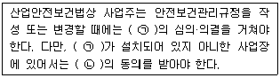
- ㉠안전보건관리규정위원회, ㉡노사대표
- ㉠안전보건관리규정위원회, ㉡근로자대표
- ㉠산업안전보건위원회, ㉡노사대표
- ㉠산업안전보건위원회, ㉡근로자대표
(정답률: 71%)
2과목: 인간공학 및 시스템안전공학
21. 인간공학의 연구방법에서 인간-기계 시스템을 평가하는 척도로서 인간기준이 아닌 것은?
- 사고 빈도
- 인간성능 척도
- 객관적 반응
- 생리학적 지표
(정답률: 62%)
22. 인간오류의 확률을 이용하여 시스템의 위험성을 평가하는 기법은?
- PHA
- THERP
- OHA
- HAZOP
(정답률: 77%)
23. “음의 높이, 무게 등 물리적 자극을 상대적으로 판단하는 데 있어 특정 감각기관의 변화감지역은 표준자극에 비례한다.” 라는 법칙을 발견한 사람은?
- 핏츠(Fitts)
- 드루리(Drury)
- 웨버(Weber)
- 호프만(Hofmann)
(정답률: 73%)
24. 설비의 이상상태 여부를 감시하여 열화의 정도가 사용한도에 이른 시점에서 부품교환 및 수리하는 설비보전 방법은?
- 예지보전
- 계량보전
- 사후보전
- 일상보전
(정답률: 60%)
25. 신뢰도가 동일한 부품 4개로 구성된 시스템 전체의 신뢰도가 가장 높은 것은?
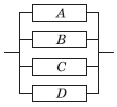
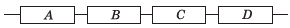
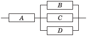
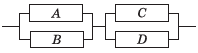
(정답률: 81%)
26. FT에서 두 입력사상 A와 B가 AND게이트로 결합되어 있을 때 출력사상의 고장발생확률은?(단, A의 고장률은 0.6, B의 고장률은 0.2이다.)
- 0.12
- 0.40
- 0.68
- 0.80
(정답률: 65%)
27. 인간-기계 시스템의 신뢰도를 향상시킬 수 있는 방법으로 가장 적절하지 않은 것은?
- 중복설계
- 고가재료 사용
- 부품개선
- 충분한 여유용량
(정답률: 82%)
28. 그림의 FT도에서 최소 패스셋(minimal pathset)은?
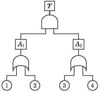
- {1, 3}, {1, 4}
- {1, 2} , {3, 4}
- {1, 2, 3}, {1, 2, 4}
- {1, 3, 4}, {2, 3, 4}
(정답률: 63%)
29. 광원으로부터 직사휘광을 처리하기 위한 방법으로 틀린 것은?
- 광원의 휘도를 줄인다.
- 가리개나 차양을 사용한다.
- 광원을 시선에서 멀리 한다.
- 광원의 주위를 어둡게 한다.
(정답률: 75%)
30. 그림의 선형 표시장치를 움직이기 위해 길이가 L인 레버(lever)를 α° 움직일 때 조종반응(C/R) 비율을 계산하는 식은?
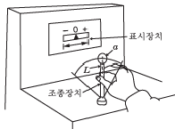
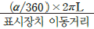
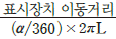
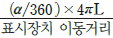
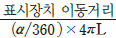
(정답률: 73%)
31. 설비에 부착된 안전장치를 제거하면 설비가 작동되지 않도록 하는 안전설계는?
- Fail safe
- Fool proof
- Lock out
- Temper proof
(정답률: 65%)
32. VDT(visual display terminal) 작업을 위한 조명의 일반원칙으로 적절하지 않은 것은?
- 화면반사를 줄이기 위해 산란식 간접조명을 사용한다.
- 화면과 화면에서 먼 주위의 휘도비는 1:10으로 한다.
- 작업영역을 조명기구들 사이보다는 조명기구 바로 아래에 둔다.
- 조명의 수준이 높으면 자주 주위를 둘러봄으로써 수정체의 근육을 이완시키는 것이 좋다.
(정답률: 74%)
33. 인간의 반응체계에서 이미 시작된 반응을 수정하지 못하는 저항시간(refractory period)은?
- 0.1초
- 0.5초
- 1초
- 2초
(정답률: 72%)
34. 60폰(phon)의 소리에 해당하는 손(sone)의 값은?
- 1
- 2
- 4
- 8
(정답률: 68%)
35. 의자 좌판의 높이 결정 시 사용할 수 있는 인체측정치는?
- 앉은 키
- 앉은 무릎 높이
- 앉은 팔꿈치 높이
- 앉은 오금 높이
(정답률: 61%)
36. 다음의 인체측정자료의 응용원리를 설계에 적용하는 순서로 가장 적절한 것은?
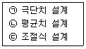
- ㉠→㉡→㉢
- ㉢→㉡→㉠
- ㉡→㉠→㉢
- ㉢→㉠→㉡
(정답률: 60%)
37. 후각적 표시장치에 대한 설명으로 틀린 것은?
- 냄새의 확산을 통제하기 힘들다.
- 코가 막히면 민감도가 떨어진다.
- 복잡한 정보를 전달하는 데 유용하다.
- 냄새에 대한 민감도의 개인차가 있다.
(정답률: 87%)
38. 측정값의 변화방향이나 변화속도를 나타내는 데 가장 유리한 표시장치는?
- 동침형
- 동목형
- 계수형
- 묘사형
(정답률: 74%)
39. FT에서 사용되는 사상기호에 대한 설명으로 맞는 것은?
- 위험지속기호 : 정해진 횟수 이상 입력이 될 때 출력이 발생한다.
- 억제게이트 : 조건부 사건이 일어났다는 조건하에 출력이 발생한다.
- 우선적 AND 게이트 : 입력이 될 때 정해진 순서대로 복수의 출력이 발생한다.
- 배타적 OR 게이트 : 2개 이상 입력이 동시에 존재하는 경우에 출력이 발생한다.
(정답률: 55%)
40. 다음 설명에 해당하는 시스템 위험분석방법은?
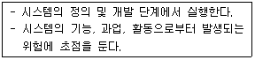
- 모트(MORT)
- 결함수분석(FTA)
- 예비위험분석(PHA)
- 운용위험분석(OHA)
(정답률: 46%)
3과목: 기계위험방지기술
41. 프레스 등의 금형을 부착·해체 또는 조정 작업 중 슬라이드가 갑자기 작동하여 발생할 수 있는 위험을 방지하기 위하여 설치하는 것은?
- 방호 울
- 안전블록
- 시건장치
- 게이트 가드
(정답률: 84%)
42. 롤러의 맞물림점 전방 60mm의 거리에 가드를 설치하고자 할 때 가드 개구부의 간격은?(단, 위험점이 전동체가 아닌 경우이다.)
- 12mm
- 15mm
- 18mm
- 20mm
(정답률: 61%)
43. 밀링작업에 관한 설명으로 틀린 것은?
- 하향절삭은 날의 마모가 적고, 가공면이 깨끗하다.
- 상향절삭은 절삭열에 의한 치수정밀도의 변화가 적다.
- 커터의 회전방향과 반대방향으로 가공재를 이송 하는 것을 상향절삭이라고 한다.
- 하향절삭은 커터의 회전방향과 같은 방향으로 일감을 이송하므로 백래 시 제거장치가 필요없다.
(정답률: 73%)
44. 컨베이어 작업 시 준수해야 할 사항이 아닌 것은?
- 운전 중인 컨베이어 등의 위로 근로자를 넘어가도록 하는 경우에는 위험을 방지하기 위하여 건널다리를 설치하는 등 필요한 조치를 하여야 한다.
- 근로자를 운반할 수 있는 구조가 아닌 운전 중인 컨베이어에 근로자를 탑승시켜서는 안 된다.
- 작업 중 급정지를 방지하기 위하여 비상정지장치는 해체해야 한다.
- 트롤리 컨베이어에 트롤리와 체인·행거가 쉽게 벗겨지지 않도록 확실하게 연결시켜야 한다.
(정답률: 83%)
45. 기계운동 형태에 따른 위험점 분류 중 다음에서 설명하는 것은?
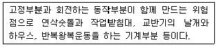
- 끼임점
- 접선물림점
- 협착점
- 절단점
(정답률: 73%)
46. 위험기계·기구와 이에 해당하는 방호장치의 연결이 틀린 것은?
- 연삭기-급정지장치
- 프레스-광전자식 방호장치
- 아세틸렌 용접장치-안전기
- 압력용기-압력방출용 안전밸브
(정답률: 57%)
47. 기계설비의 일반적인 안전조건에 해당되지 않는 것은?
- 설비의 안전화
- 기능의 안전화
- 구조의 안전화
- 작업의 안전화
(정답률: 46%)
48. 보일러수에 유지류, 고형물 등에 의한 거품이 생겨 수위를 판단하지 못하는 현상은?
- 역화
- 포밍
- 프라이밍
- 캐리오버
(정답률: 86%)
49. 프레스기에 사용하는 양수조작식 방호장치의 일반 구조에 관한 설명 중 틀린 것은?
- 1행정 1정지 기구에 사용할 수 있어야 한다.
- 누름버튼을 양손으로 동시에 조작하지 않으면 작동시킬 수 없는 구조이어야 한다.
- 양쪽버튼의 작동시간 차이는 최대 0.5초 이내일 때 프레스가 동작되도록 해야 한다.
- 방호장치는 사용전원전압의 ±50%의 변동에 대하여 정상적으로 작동되어야 한다.
(정답률: 72%)
50. 기준무부하상태에서 구내최고속도가 20[km/h]인 지게차의 주행 시 좌우안정도 기준은 몇 % 이내인가?
- 4[%]
- 20[%]
- 37[%]
- 40[%]
(정답률: 62%)
51. 세이퍼 작업 시의 안전대책으로 틀린 것은?
- 바이트는 가급적 짧게 물리도록 한다.
- 가공 중 다듬질 면을 손으로 만지지 않는다.
- 시동하기 전에 행정 조정용 핸들을 끼워둔다.
- 가공 중에는 바이트의 운동방향에 서지 않도록 한다.
(정답률: 71%)
52. 드릴작업 시 가공재를 고정하기 위한 방법으로 적합하지 않은 것은?
- 가공재가 길 때는 방진구를 이용한다.
- 가공재가 작을 때는 바이스로 고정한다.
- 가공재가 크고 복잡할 때는 볼트와 고정구로 고정 한다.
- 대량생산과 정밀도가 요구될 때는 지그로 고정한다.
(정답률: 57%)
53. 산업용 로봇의 작동범위에서 그 로봇에 관하여 교시 등의 작업을 하는 때의 작업시간 전 점검사항에 해당하지 않는 것은?(단, 로봇의 동력원을 차단하고 행하는 것을 제외한다.)
- 회전부의 덮개 또는 울
- 제동장치 및 비상정지장치의 기능
- 외부전선의 피복 또는 외장의 손상유무
- 매니퓰레이터(manipulator) 작동의 이상유무
(정답률: 54%)
54. 보일러에서 과열이 발생하는 직접적인 원인과 가장 거리가 먼 것은?
- 수관의 청소 불량
- 관수 부족 시 보일러의 가동
- 안전밸브의 기능이 부정확할 때
- 수면계의 고장으로 드럼 내의 물의 감소
(정답률: 60%)
55. 기계설비의 안전조건 중 외관의 안전화에 해당되는 조치는?
- 고장 발생을 최소화하기 위해 정기점검을 실시하였다.
- 강도의 열화를 생각하여 안전율을 최대로 고려하여 설계하였다.
- 전압강하, 정전 시의 오동작을 방지하기 위하여 자동제어 장치를 설치하였다.
- 작업자가 접촉할 우려가 있는 기계의 회전부를 덮개로 씌우고 안전색채를 사용하였다.
(정답률: 77%)
56. 기계설비의 본질적 안전화를 위한 방식 중 성격이 다른 것은?
- 고정 가드
- 인터록 기구
- 압력용기 안전밸브
- 양수조작식 조작기구
(정답률: 45%)
57. 기계설비의 방호장치 분류 중 위험원에 대한 방호장치는?
- 감지형 방호장치
- 접근반응형 방호장치
- 위치제한형 방호장치
- 접근거부형 방호장치
(정답률: 47%)
58. 프레스기에서 사용하는 손쳐내기식 방호장치의 방호판에 관한 기준으로 옳은 것은?
- 방호판의 폭은 금형폭의 1/2 이상이어야 하고, 행정길이가 300[mm] 이상의 프레스 기계에서는 방호판의 폭을 200[mm]로 해야 한다.
- 방호판의 폭은 금형폭의 1/2 이상이어야 하고, 행정길이가 300[mm] 이상의 프레스 기계에서는 방호판의 폭을 300[mm]로 해야 한다.
- 방호판의 폭은 금형폭의 1/3 이상이어야 하고, 행정길이가 300[mm] 이상의 프레스 기계에서는 방호판의 폭을 200[mm]로 해야 한다.
- 방호판의 폭은 금형폭의 1/3 이상이어야 하고, 행정길이가 300[mm] 이상의 프레스 기계에서는 방호판의 폭을 300[mm]로 해야 한다.
(정답률: 65%)
59. 작업장에서 사용하는 로프의 최대사용하중이 200[kgf]이고, 절단하중이 600[kgf]일 때 이 로프의 안전율은?
- 0.33
- 3
- 200
- 300
(정답률: 81%)
60. 연삭기에서 연삭숫돌차의 바깥지름이 250[mm]일 경우 평형플랜지의 바깥지름은 약 몇 [mm] 이상이어야 하는가?
- 62
- 84
- 93
- 114
(정답률: 74%)
4과목: 전기 및 화학설비위험방지기술
61. 정전작업 시 주의할 사항으로 틀린 것은?
- 감독자를 배치시켜 스위치의 조작을 통제한다.
- 퓨즈가 있는 개폐기의 경우는 퓨즈를 제거한다.
- 정전작업 전에 작업내용을 충분히 작업원에게 주지시킨다.
- 단시간에 끝나는 작업일 경우 작업원의 판단에 의해 작업한다.
(정답률: 78%)
62. 근로자가 충전전로에 취급하거나 그 인근에서 작업 하는 경우 조치하여야 하는 사항으로 틀린 것은?
- 충전전로를 취급하는 근로자에게 그 작업에 적합한 절연용 보호구를 착용시킬 것
- 충전전로를 정전시키는 경우 차단장치나 단로기 등의 잠금장치 확인 없이 빠른 시간 내에 작업을 완료할 것
- 충전전로에 근접한 장소에서 전기작업을 하는 경우에는 해당 전압에 적합한 절연용 방호구를 설치할 것
- 고압 및 특별고압의 전로에서 전기작업을 하는 근로자에게 활선작업용 기구 및 장치를 사용하도록 할 것
(정답률: 85%)
63. 전기설비의 점화원 중 잠재적 점화원에 속하지 않는 것은?
- 전동기 권선
- 마그넷 코일
- 케이블
- 릴레이 전기접점
(정답률: 45%)
64. 접지에 관한 설명으로 틀린 것은?
- 접지저항이 크면 클수록 좋다.
- 접지공사의 접지선은 과전류차단기를 시설하여서는 안 된다.
- 접지극의 시설은 동판, 동봉 등이 부식될 우려가 없는 장소를 선정하여 지중에 매설 또는 타입한다.
- 고압전로와 저압전로를 결합하는 변압기의 저압전로 사용전압이 300[V] 이하로 중성점 접지가 어려운 경우 저압측 임의의 한 단자에 제2종 접지 공사를 실시한다.
(정답률: 64%)
65. 방폭구조의 명칭과 표기기호가 잘못 연결된 것은?
- 안전증방폭구조 : e
- 유입(油入)방폭구조 : o
- 내압(耐壓)방폭구조 : p
- 본질안전방폭구조 : ia 또는 ib
(정답률: 72%)
66. 인체의 대부분이 수중에 있는 상태에서의 허용접촉 전압으로 옳은 것은?
- 2.5[V] 이하
- 25[V] 이하
- 50[V] 이하
- 100[V] 이하
(정답률: 75%)
67. 전기기계·기구의 조작부분을 점검하거나 보수하는 경우에는 근로자가 안전하게 작업할 수 있도록 전기기계·기구로부터 몇 [m] 이상의 작업공간을 확보하여야 하는지 그 기준으로 옳은 것은?
- 0.5
- 0.7
- 0.9
- 1.2
(정답률: 52%)
68. 정전기의 대전현상이 아닌 것은?
- 교반대전
- 충돌대전
- 박리대전
- 망상대전
(정답률: 77%)
69. 인체가 전격(감전)으로 인한 사고 시 통전전류에 의한 인체반응으로 틀린 것은?
- 교류가 직류보다 일반적으로 더 위험하다.
- 주파수가 높아지면 감지전류는 작아진다.
- 심장을 관통하는 경로가 가장 사망률이 높다.
- 가수전류는 불수전류보다 값이 대체적으로 작다.
(정답률: 58%)
70. 400[V]를 넘는 저압 전로의 절연저항 값은 몇 [MΩ]이상으로 하여야 하는가?(관련 규정 개정전 문제로 여기서는 기존 정답인 2번을 누르면 정답 처리됩니다. 자세한 내용은 해설을 참고하세요.)
- 0.2
- 0.4
- 0.8
- 1.0
(정답률: 77%)
71. 25[℃], 1기압에서 공기 중 벤젠(C6H6)의 허용농도가 10[ppm]일 때 이를 [mg/m3]의 단위로 환산하면 약 얼마인가?(단, C, H의 원자량은 각각 12, 1이다.)
- 28.7
- 31.9
- 34.8
- 45.9
(정답률: 46%)
72. 다음 중 점화원에 해당하지 않는 것은?
- 기화열
- 충격·마찰
- 복사열
- 고온물질표면
(정답률: 52%)
73. 리튬(Li)에 관한 설명으로 틀린 것은?
- 연소 시 산소와는 반응하지 않는 특성이 있다.
- 염산과 반응하여 수소를 발생한다.
- 물과 반응하여 수소를 발생한다.
- 화재발생 시 소화방법으로는 건조된 마른 모래 등을 이용한다.
(정답률: 51%)
74. 다음 중 화재의 종류가 옳게 연결된 것은?
- A급화재-유류화재
- B급화재-유류화재
- C급화재-일반화재
- D급화재-일반화재
(정답률: 81%)
75. 위험물안전관리법상 자기반응성 물질은 제 몇 류 위험물로 분류하는가?
- 제1류 위험물
- 제3류 위험물
- 제4류 위험물
- 제5류 위험물
(정답률: 55%)
76. 프로판(C3H8) 1몰이 완전연소하기 위한 산소의 화학 양론계수는 얼마인가?
- 2
- 3
- 4
- 5
(정답률: 45%)
77. 다음 중 분해 폭발하는 가스의 폭발방지를 위하여 첨가하는 불활성가스로 가장 적합한 것은?
- 산소
- 질소
- 수소
- 프로판
(정답률: 77%)
78. 다음 중 물 속에 저장이 가능한 물질은?
- 칼륨
- 황린
- 인화칼슘
- 탄화알루미늄
(정답률: 78%)
79. 다음 중 건조설비의 사용상 주의사항으로 적절하지 않은 것은?
- 건조설비 가까이 가연성 물질을 두지 말 것
- 고온으로 가열 건조한 물질은 즉시 격리 저장할 것
- 위험물 건조설비를 사용할 때는 미리 내부를 청소하거나 환기시킨 후 사용할 것
- 건조 시 발생하는 가스·증기 또는 분진에 의한 화재·폭발의 위험이 있는 물질은 안전한 장소로 배출할 것
(정답률: 73%)
80. 할로겐 화합물 소화약제의 소화작용과 같이 연소의 연속적인 연쇄 반응을 차단, 억제 또는 방해하여 연소현상이 일어나지 않도록 하는 소화 작용은?
- 부촉매 소화작용
- 냉각 소화작용
- 질식 소화작용
- 제거 소화작용
(정답률: 57%)
5과목: 건설안전기술
81. 굴착면 붕괴의 원인과 가장 관계가 먼 것은?
- 사면경사의 증가
- 성토 높이의 감소
- 공사에 의한 진동하중의 증가
- 굴착높이의 증가
(정답률: 71%)
82. 물체를 투하할 때 투하설비를 설치하거나 감시인을 배치하는 등의 위험방지를 위한 조치를 하여야 하는 기준 높이는?
- 3[m] 이상
- 5[m] 이상
- 7[m] 이상
- 10[m] 이상
(정답률: 59%)
83. 공사금액이 500억원인 건설업 공사에서 선임해야 할 최소 안전관리자 수는?
- 1명
- 2명
- 3명
- 4명
(정답률: 60%)
84. 채석작업을 하는 때 채석작업계획에 포함되어야 하는 사항에 해당되지 않는 것은?
- 굴착면의 높이와 기울기
- 기둥침하의 유무 및 상태 확인
- 암석의 분할방법
- 표토 또는 용수의 처리방법
(정답률: 41%)
85. 슬레이트, 선라이트 등 강도가 약한 재료로 덮은 지붕 위에서의 작업 중 위험방지를 위하여 필요한 발판의 폭기준은?
- 10[cm] 이상
- 20[cm] 이상
- 25[cm] 이상
- 30[cm] 이상
(정답률: 75%)
86. 가설구조물의 특징으로 옳지 않은 것은?
- 연결재가 적은 구조로 되기 쉽다.
- 부재의 결합이 매우 복잡하다.
- 구조상의 결함이 있는 경우 중대재해로 이어질 수 있다.
- 사용부재가 과소단면이거나 결함재료를 사용하기 쉽다.
(정답률: 71%)
87. 철골보 인양작업 시 준수사항으로 옳지 않은 것은?
- 인양용 와이어로프의 체결지점은 수평부재의 1/4 지점을 기준으로 한다.
- 인양용 와이어로프의 매달기 각도는 양변 60[℃]를 기준으로 한다.
- 흔들리거나 선회하지 않도록 유도 로프로 유도한다.
- 후크는 용접의 경우 용접규격을 반드시 확인한다.
(정답률: 64%)
88. 강관틀비계를 조립하여 사용하는 경우 벽이음의 수직방향 조립간격은?
- 2[m] 이내마다
- 5[m] 이내마다
- 6[m] 이내마다
- 8[m] 이내마다
(정답률: 44%)
89. 흙의 함수비 측정시험을 하였다. 먼저 용기의 무게를 잰 결과 10g이었다. 시료를 용기에 넣은 후에 총 무게는 40g, 그대로 건조시킨 후 무게는 30g이었다. 이 흙의 함수비는?
- 25%
- 30%
- 50%
- 75%
(정답률: 40%)
90. 일반적인 안전수칙에 따른 수공구와 관련된 행동으로 옳지 않은 것은?
- 작업에 맞는 공구의 선택과 올바른 취급을 하여야 한다.
- 결함이 없는 완전한 공구를 사용하여야 한다.
- 작업중인 공구는 작업이 편리한 반경 내의 작업대나 기계 위에 올려놓고 사용하여야 한다.
- 공구는 사용 후 안전한 장소에 보관하여야 한다.
(정답률: 84%)
91. 낙하물 방지망 설치기준으로 옳지 않은 것은?
- 높이 10[m] 이내마다 설치한다.
- 내민 길이는 벽면으로부터 3[m] 이상으로 한다.
- 수평면과의 각도는 20[°] 이상, 30[°] 이하를 유지 한다.
- 방호선반의 설치기준과 동일하다.
(정답률: 58%)
92. 추락방지망의 달기로프를 지지점에 부착할 때 지지점의 간격이 1.5[m]인 경우 지지점의 강도는 최소 얼마 이상이어야 하는가?
- 200[kg]
- 300[kg]
- 400[kg]
- 500[kg]
(정답률: 65%)
93. 히빙현상에 대한 안전대책과 가장 거리가 먼 것은?
- 어스앵커 설치
- 흙막이벽의 근입심도 확보
- 양질의 재료로 지반개량 실시
- 굴착주변에 상재하중을 증대
(정답률: 58%)
94. 철골작업 시 폭우와 같은 악천후에 작업을 중지하여야 하는 강우량 기준은?
- 1시간당 1[mm] 이상 일 때
- 2시간당 1[mm] 이상 일 때
- 3시간당 2[mm] 이상 일 때
- 4시간당 2[mm] 이상 일 때
(정답률: 82%)
95. 철골공사에서 부재의 건립용 기계로 거리가 먼 것은?
- 타워크레인
- 가이데릭
- 삼각데릭
- 항타기
(정답률: 71%)
96. 콘크리트 양생작업에 관한 설명 중 옳지 않은 것은?
- 콘크리트 타설 후 소요기간까지 경화에 필요한 조건을 유지시켜주는 작업이다.
- 양생 기간 중에 예상되는 진동, 충격, 하중 등의 유해한 작용으로부터 보호하여야 한다.
- 습윤양생 시 일광을 최대한 도입하여 수화작용을 촉진하도록 한다.
- 습윤양생 시 거푸집판이 건조될 우려가 있는 경우에는 살수하여야 한다.
(정답률: 67%)
97. 양중기에서 화물을 직접 지지하는 달기와이어로프의 안전계수는 최소 얼마 이상으로 하여야 하는가?
- 2
- 3
- 5
- 10
(정답률: 73%)
98. 다음은 산업안전보건기준에 관한 규칙 중 조립도에 관한 사항이다. ( )안에 알맞은 것은?
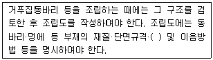
- 부재강도
- 기울기
- 안전대책
- 설치간격
(정답률: 61%)
99. 건설공사 유해·위험방지계획서를 제출하는 경우 자격을 갖춘 자의 의견을 들은 후 제출하여야 하는데 이 자격에 해당하지 않는 자는?
- 건설안전기사로서 건설안전관련 실무경력이 4년인 자
- 건설안전기술사
- 토목시공기술사
- 건설안전분야 산업안전지도사
(정답률: 59%)
100. 흙의 안식각과 동일한 의미를 가진 용어는?
- 자연 경사각
- 비탈면각
- 시공 경사각
- 계획 경사각
(정답률: 60%)